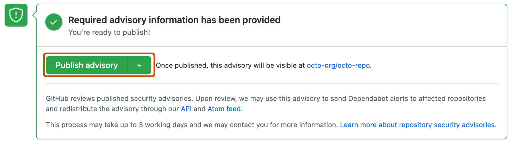
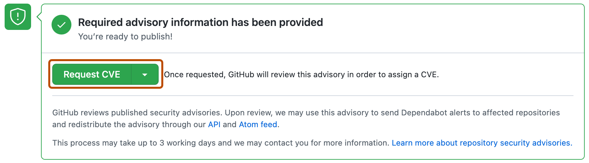

You can publish a security advisory to alert your community about a security vulnerability in your project.
Note
This article applies to repository-level security advisories in a public repository.
To edit a global advisory in the GitHub Advisory Database, see Editing security advisories in the GitHub Advisory Database.
Before you can publish a security advisory or request a CVE identification number, you must create a draft security advisory and provide information about the versions of your project affected by the security vulnerability. See Creating a repository security advisory and Editing a repository security advisory.
Warning
Whenever possible, you should add a fix version to a security advisory prior to publishing the advisory. If you don't, the advisory will be published without a fixed version, and Dependabot will alert your users about the issue without offering any safe version to update to.
On GitHub, navigate to the main page of the repository.
Under the repository name, click the Security and quality tab. If you cannot see the " Security and quality" tab, select the dropdown menu, and then click Security and quality.
In the left sidebar, under "Reporting", click Advisories.
In the "Security Advisories" list, click the name of the security advisory you'd like to publish.
Scroll to the bottom of the advisory form and click Publish advisory.

Note
Publishing a security advisory deletes the temporary private fork for the security advisory.
If you don't already have a CVE identification number for a security vulnerability in your project, you can request one from GitHub.
On GitHub, navigate to the main page of the repository.
Under the repository name, click the Security and quality tab. If you cannot see the " Security and quality" tab, select the dropdown menu, and then click Security and quality.
In the left sidebar, under "Reporting", click Advisories.
In the "Security Advisories" list, click the name of the security advisory you'd like to request a CVE identification number for.
Scroll to the bottom of the advisory form and click Request CVE.
